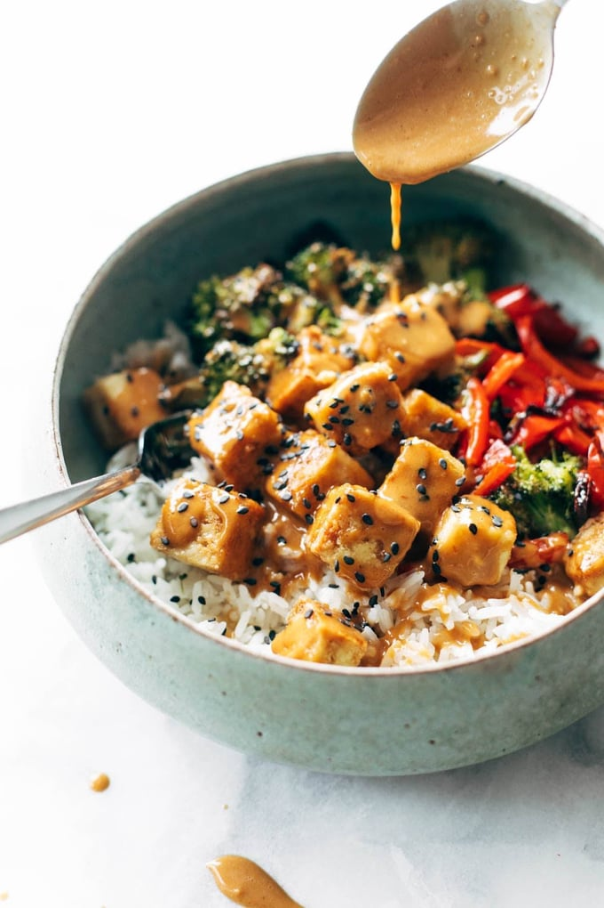

INGREDIENTS
- 2 blocks of extra firm tofu
- 2 tablespoons of olive oil
- 1 teaspoon salt
- 1 broccoli, cut into florets
- 2 red bell peppers, cut into strips
- 2 cups of brown rice
- 1/2 cup of peanut butter
- 1/2 cup of soy sauce
- 2 tablespoons of sesame oil
- 2 tablespoons of rice vinegar
- 2 tablespoons of honey
- 1 inch piece of ginger
- 1 clove of garlic

INSTRUCTIONS
- Press the tofu to remove moisture and cut into cubes.
- Arrange the tofu, broccoli and peppers on a baking sheet, drizzle with olive oil and salt, and cook for 30 minutes.
- Cook the rice according to package instructions.
- Make the sauce by blending peanut butter, soy sauce, sesame oil, vinegar, honey, garlic, ginger and chili flakes.
- Serve the tofu and vegetables over rice and drizzle with peanut sauce.